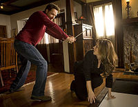
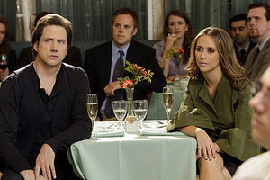

Ghost Whisperer
 De: La Frikipedia, la enciclopedia extremadamente seria.
De: La Frikipedia, la enciclopedia extremadamente seria.
De la serie Programas de TV:
| Idioma original:
|
Inglés
|
| Creador:
|
Yon Gray
|
| Duración:
|
Una hora
|
| No. Episodios:
|
Ciento y pico
|
| No. Temporadas:
|
Cinco, no dio mas para la sexta
|
| ¿Aún se transmite?:
|
A veces
|
| Género:
|
Fantasma
|
| Nivel de frikismo:
|
Medio
|
| Películas:
|
Ninguna
|
Ghost Whisperer es una serie de televisión gringola, que trata de una mujer a la que le persiguen los muertos. Si pensabas en una serie del tipo The Walking Dead, no hablaba de esa clase de muertos, sino de almas, ánimas, aparecidos, espirituosas, en fin, como quieras llamarlo. Visto así, la serie no parece interesante, pero cambiarás de opinión si te digo que la mujer es Jennifer Love Hewitt, la que pegaba gritos como loca en Sé lo que hicieron el verano pasado.
La serie aparece en 2005 y termina cruzando al más allá en 2010, demostrando que la gente prefiere a muertos comiendo sesos que descansando en paz. La serie inspiró otros plagios spinoffs como Medium, Joan of Arcadia o Supernatural, aunque en este último caso decidieron que era más interesante cambiar una mujer en babydoll por dos pistoleros a bordo de un carro viejo.
Argumento
 Melinda jugando a los toros con el espíritu de un rejoneador
Ghost Whisperer nos cuenta la historia de Melinda Gordo, una vendedora de antigüedades que vive una historia normal con su esposo paramédico en un pueblito olvidado. Desde niña, debido a las galletas de "chocolate" que su abuela preparaba (y se comía), Melinda tuvo alucinaciones donde creía ver fantasmas y muertos. Al principio sólo veía a los muertos en los cementerios y los fantasmas en televisores mal sintonizados, pero luego el mal se hizo crónico, al punto de que la gente la tomaba como una loca.
Tiempo después, Melinda decide vivir en el pueblo donde se desarrolla la historia, conoce a un paramédico de segunda llamado Jim Clancy con quien se casa luego de que Jim le aclarase que no era un sicólogo. Abre una tienda de antigüedades con una negrita sospechosamente parecida a Tyra Banks Aisha Tyler llamada Andrea Marino, y es en ese pueblo de todos los pueblos de Inglaterra donde se desarrolla la serie donde TODOS los fantasmas acuden al consultorio de Melnda a quejarse y buscar solución a sus problemas.
La negrita se muere, y es sustituída por una gorda llamada Delia Banks que tiene un hijo (Ned) que está cansado de que su madre invoque el espíritu de su padre, muerto en acción (no se sabe cómo). Delia decide cambiar su seguro y bien remunerado negocio de venta de casas por un empleo mal pagado como ayudante de Melinda, quien también la involucra con los fantasmas y eso.
En esta serie también participan un profesor de historia, un sicoloco y varios espíritus burlones.
Personajes
Principales

Melinda rompiendo el acuerdo de que todos debían vestirse de negro, y de paso robando cámara
- Melinda Gordo: La prota. Ve fantasmas desde chiquita, por lo que mucha gente la tomaba por loca aunque la abuela la utilizaba para sus negocios particulares (¿quien dijo que leer las cartas no da dinero?). Al parecer es pájaro de mal agüero, ya que su abuela, su socia Andrea y su esposo murieron en raras circunstancias, aunque se presume que es de causas naturales: enfermedades, balazos, la edad, cosas así.
- Jim Clancy: el esposo de Melinda. Paramédico exitoso ya que salvó a la mitad de la población en un pueblo de 100 habitantes. A diferencia de otros seres que llegaron a conocer a Melinda, Jim no la mira como una loca cuando ella le cuenta sobre su don. Aunque pensaba sacar provecho de la situación, desiste cuando descubre que no puede ver fantasmas y que ellos pueden ser muy inoportunos, al punto que no ha podido tener hijos con Melinda (que te interrumpa un fantasma a la mitad del acto no es agradable para nadie).
- Sam Lucas: el segundo esposo de Melinda. En realidad, es un arquitecto muerto a quien Jim le tomó prestado su cuerpo. Se hace pasar en la tercera o cuarta temporada por alguien sin memoria, solo para descubrir que su novia anterior lo dejó y ya que Melinda estaba disponible...
- Andrea Marino: su primera socia en la tienda de marras. Dejó un buen empleo en un bufete de los nuyores para ser socia de una loca que dice ver fantasmas en un pueblo chiquito. Al final muere.
- Delia Banks: agente de bienes raices que intenta vender casas en el pueblito de Melinda. De hecho la conoce cuando su hijo la asalta (normal que Melinda se haga amiga de la madre de un chico que te asalta). Se convence del don de Melinda cuando su esposo muerto la visita para asustarla...
Secundarios
 -
Melinda, estoy escuchando voces que dicen "Mata a Melinda". ¿Ves un fantasma ahí? -
No hay fantasmas, es solo esquizofrenia - Ned Banks: El hijo de Delia, a quién conoció robando comida, y quien está cansado de que su madre lo regañe y le quite los porros que tiene guardados en su cuarto.
- Rick Payne: Un psicoloco que ayuda a Melinda en las temporadas dos y tres debido a que enseña fenómenos paranormales a pesar de que no ha visto ni un fantasma. Debido a eso tiene problemas con su mujer muerta.
- Eli James: Un profesor que ayuda a Melinda en la cuarta temporada. Puede escuchar a los fantasmas, por lo cual lo toman por loco.
- Aiden Lucas: El hijo de Sam y Melinda, que termina viendo fantasmas como su madre, además de zombis, celebridades fallecidas y políticos de partidos minoritarios. En otras palabras, ve lo que su madre no ha podido ver.
Fantasmas
Hay tantos que no me aprendí los nombres. Bueno, otro día será...
Más fantasmas
Frikipedia 2005-2016, Licencia
GFDL 1.2 - Extraído por FrikiLeaks